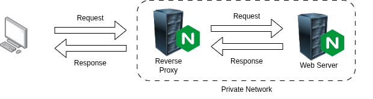
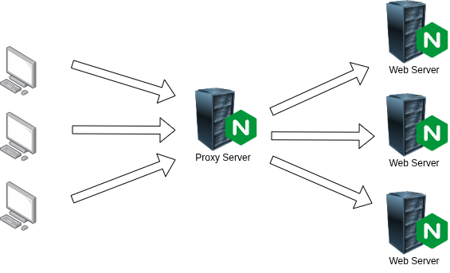
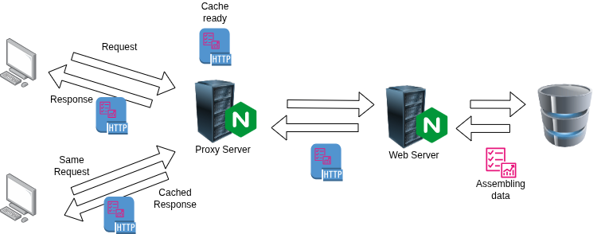
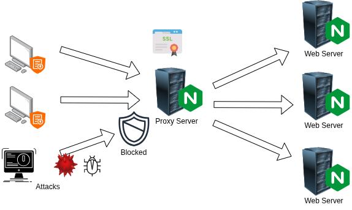
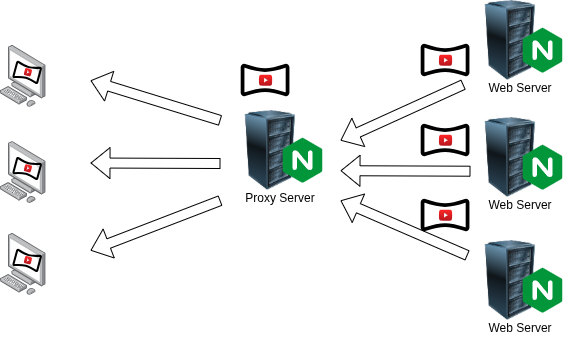

NGINX was originally designed as a lightweight and high-performance Web Server.
It serves static files extremely fast and handles thousands of simultaneous connections with low memory consumption.
MODERN WEB INFRASTRUCTURE
NGINX ("engine x"), the single entry point that receives tons of requests and decides what happens next: serve, route, cache, secure, compress.
CORE FEATURES
NGINX was originally designed as a lightweight and high-performance Web Server.
It serves static files extremely fast and handles thousands of simultaneous connections with low memory consumption.
As a Reverse Proxy, NGINX can stand between clients and backend servers. It receives incoming traffic and forwards requests to internal services without exposing infrastructure directly to the public internet.

As a Load Balancer, NGINX can distribute traffic between multiple backend servers to improve performance and ensure high availability.
The distribution can follow different logics:

Instead of regenerating the same content repeatedly, NGINX can cache responses and serve them instantly.
This reduces backend workload and dramatically improves response time under heavy traffic.

NGINX acts as a secure gateway between the internet and private infrastructure.
It centralizes SSL/TLS encryption, filters malicious traffic and protects backend services from direct exposure.

NGINX can compress HTTP responses (with gzip or brotli) before sending them to clients.
Smaller payloads mean faster loading times, reduced bandwidth consumption and better scalability.

IT ALL LIVES IN ONE CONFIG
A single declarative file - nginx.conf - to connect every role together.
# Backend servers to which Nginx redirects requests
upstream app {
least_conn;
server 10.0.0.11:8080;
server 10.0.0.12:8080;
}
server {
listen 443 ssl; # Secure Entry Point
ssl_certificate /etc/ssl/site.crt;
gzip on; # Traffic Compressor
location / {
proxy_cache my_cache; # Cache Manager
proxy_pass http://app; # Reverse Proxy + Load Balancer
}
}